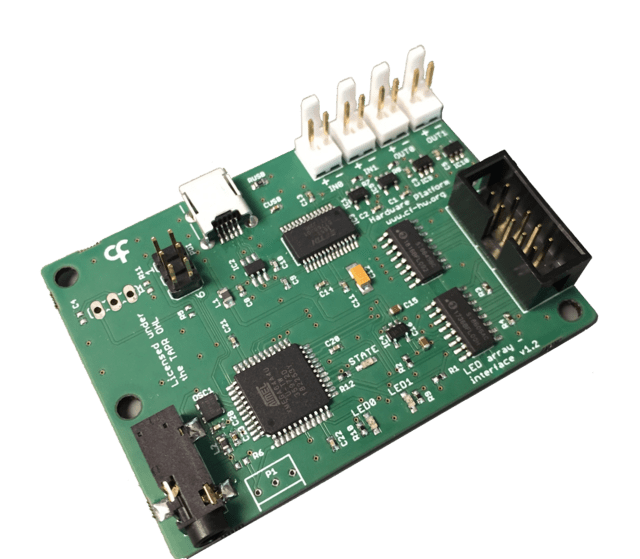

Namespace Harp.LedArray
Harp LED array
Controlling LED arrays that require more power. Ideally for opto-stimulation experiments.

Key Features
- Controls up to 2 separate RGB LED
- Arrays and one common Infrared LED
- Two operation modes for each RGB LED Array: PWM or Interval
Connectivity
- 1x clock sync input (CLKIN) [stereo jack]
- 1x USB (for computer) [USB type B]
- 1x flat cable
- 2x Digital Inputs (IN0, IN1) [flick lock male pins]
- 2x Digital Outputs (OUT0, OUT1) [flick lock male pins]
- 1x connector for 2 LED Arrays [10-pin flat-cable]
Interface
The interface with the Harp board can be done through Bonsai or a dedicated GUI (Graphical User Interface).
In order to use this GUI, there are some software that needs to be installed:
1 - Install the drivers.
2 - Install the runtime.
3 - Reboot the computer.
4 - Install the GUI.
Licensing
Each subdirectory will contain a license or, possibly, a set of licenses if it involves both hardware and software.
| LedArray | |
|---|---|
| whoAmI | 1088 |
| firmwareVersion | 2.4 |
| hardwareTargets | 1.1 |
Registers
| name | address | type | length | access | description | range | interfaceType |
|---|---|---|---|---|---|---|---|
| EnablePower | 32 | U8 | Write | Control the enable of both LEDs' power supply. | LedState | ||
| EnableLedMode | 33 | U8 | Write | Start/stop the LEDs according to the pulse configuration. | LedState | ||
| EnableLed | 34 | U8 | Write, Event | Enables/disables the LEDs. | LedState | ||
| DigitalInputState | 35 | U8 | Event | State of the digital input pins. An event will be emitted when the value of any digital input pin changes. | DigitalInputs | ||
| DigitalOutputSync | 36 | U8 | Write | Configuration of the digital outputs behavior. | DigitalOutputSyncPayload | ||
| DigitalInputTrigger | 37 | U8 | Write | Configuration of the digital inputs pins behavior. | DigitalInputTriggerPayload | ||
| PulseMode | 38 | U8 | Write | Sets the pulse mode used by the LEDs. | PulseModePayload | ||
| Led0Power | 39 | U8 | Write | Sets the power to LED0, between 1 and 120 (arbitrary units). | [1:120] | ||
| Led1Power | 40 | U8 | Write | Sets the power to LED1, between 1 and 120 (arbitrary units). | [1:120] | ||
| Led0PwmFrequency | 41 | Float | Write | Sets the frequency (Hz) of LED0 when in Pwm mode, between 0.5 and 2000. | [0.5:2000] | ||
| Led0PwmDutyCycle | 42 | Float | Write | Sets the duty cycle (%) of LED0 when in Pwm mode, between 0.1 and 99.9. | [0.1:99.9] | ||
| Led0PwmPulseCounter | 43 | U16 | Write | Sets the number of pulses of LED0 when in Pwm mode, between 1 and 65535. | [1:65535] | ||
| Led0PulseTimeOn | 44 | U16 | Write | Sets the time on (milliseconds) of LED0 when in PulseTime mode, between 1 and 65535. | [1:65535] | ||
| Led0PulseTimeOff | 45 | U16 | Write | Sets the time off (milliseconds) of LED0 when in PulseTime mode, between 1 and 65535. | [1:65535] | ||
| Led0PulseTimePulseCounter | 46 | U16 | Write | Sets the number of pulses of LED0 when in PulseTime mode, between 1 and 65535. | [1:65535] | ||
| Led0PulseTimeTail | 47 | U16 | Write | Sets the wait time between pulses (milliseconds) of LED0 when in PulseTime mode, between 1 and 65535. | [1:65535] | ||
| Led0PulseRepeatCounter | 48 | U16 | Write | Sets the number of repetitions of LED0 pulse protocol when in PulseTime mode, between 1 and 65535. | [1:65535] | ||
| Led1PwmFrequency | 49 | Float | Write | Sets the frequency (Hz) of LED1 when in Pwm mode, between 0.5 and 2000. | [0.5:2000] | ||
| Led1PwmDutyCycle | 50 | Float | Write | Sets the duty cycle (%) of LED1 when in Pwm mode, between 0.1 and 99.9. | [0.1:99.9] | ||
| Led1PwmPulseCounter | 51 | U16 | Write | Sets the number of pulses of LED1 when in Pwm mode, between 1 and 65535. | [1:65535] | ||
| Led1PulseTimeOn | 52 | U16 | Write | Sets the time on (milliseconds) of LED1 when in PulseTime mode, between 1 and 65535. | [1:65535] | ||
| Led1PulseTimeOff | 53 | U16 | Write | Sets the time off (milliseconds) of LED1 when in PulseTime mode, between 1 and 65535. | [1:65535] | ||
| Led1PulseTimePulseCounter | 54 | U16 | Write | Sets the number of pulses of LED1 when in PulseTime mode, between 1 and 65535. | [1:65535] | ||
| Led1PulseTimeTail | 55 | U16 | Write | Sets the wait time between pulses (milliseconds) of LED1 when in PulseTime mode, between 1 and 65535. | [1:65535] | ||
| Led1PulseRepeatCounter | 56 | U16 | Write | Sets the number of repetitions of LED1 pulse protocol when in PulseTime mode, between 1 and 65535. | [1:65535] | ||
| Led0PwmReal | 57 | Float | Read | Get the real frequency (Hz) of LED0 when in Pwm mode. | |||
| Led0PwmDutyCycleReal | 58 | Float | Read | Get the real duty cycle (%) of LED0 when in Pwm mode. | |||
| Led1PwmReal | 59 | Float | Read | Get the real frequency (Hz) of LED1 when in Pwm mode. | |||
| LedD1PwmDutyCycleReal | 60 | Float | Read | Get the real duty cycle (%) of LED1 when in Pwm mode. | |||
| AuxDigitalOutputState | 61 | U8 | Write | Write the state of the auxiliary digital output bit. | AuxDigitalOutputs | ||
| AuxLedPower | 62 | U8 | Write | Sets the power to be applied to auxiliary LED, between 1 and 120. | [1:120] | ||
| DigitalOutputState | 63 | U8 | Write | Write the state of digital output lines. | DigitalOutputs | ||
| EnableEvents | 65 | U8 | Write | Specifies all the active events in the device. | LedArrayEvents |
Classes
- AsyncDevice
Represents an asynchronous API to configure and interface with LedArray devices.
- AuxDigitalOutputState
Represents a register that write the state of the auxiliary digital output bit.
- AuxLedPower
Represents a register that sets the power to be applied to auxiliary LED, between 1 and 120.
- CreateAuxDigitalOutputStatePayload
Represents an operator that creates a message payload that write the state of the auxiliary digital output bit.
- CreateAuxLedPowerPayload
Represents an operator that creates a message payload that sets the power to be applied to auxiliary LED, between 1 and 120.
- CreateDigitalInputStatePayload
Represents an operator that creates a message payload that state of the digital input pins. An event will be emitted when the value of any digital input pin changes.
- CreateDigitalInputTriggerPayload
Represents an operator that creates a message payload that configuration of the digital inputs pins behavior.
- CreateDigitalOutputStatePayload
Represents an operator that creates a message payload that write the state of digital output lines.
- CreateDigitalOutputSyncPayload
Represents an operator that creates a message payload that configuration of the digital outputs behavior.
- CreateEnableEventsPayload
Represents an operator that creates a message payload that specifies all the active events in the device.
- CreateEnableLedModePayload
Represents an operator that creates a message payload that start/stop the LEDs according to the pulse configuration.
- CreateEnableLedPayload
Represents an operator that creates a message payload that enables/disables the LEDs.
- CreateEnablePowerPayload
Represents an operator that creates a message payload that control the enable of both LEDs' power supply.
- CreateLed0PowerPayload
Represents an operator that creates a message payload that sets the power to LED0, between 1 and 120 (arbitrary units).
- CreateLed0PulseRepeatCounterPayload
Represents an operator that creates a message payload that sets the number of repetitions of LED0 pulse protocol when in PulseTime mode, between 1 and 65535.
- CreateLed0PulseTimeOffPayload
Represents an operator that creates a message payload that sets the time off (milliseconds) of LED0 when in PulseTime mode, between 1 and 65535.
- CreateLed0PulseTimeOnPayload
Represents an operator that creates a message payload that sets the time on (milliseconds) of LED0 when in PulseTime mode, between 1 and 65535.
- CreateLed0PulseTimePulseCounterPayload
Represents an operator that creates a message payload that sets the number of pulses of LED0 when in PulseTime mode, between 1 and 65535.
- CreateLed0PulseTimeTailPayload
Represents an operator that creates a message payload that sets the wait time between pulses (milliseconds) of LED0 when in PulseTime mode, between 1 and 65535.
- CreateLed0PwmDutyCyclePayload
Represents an operator that creates a message payload that sets the duty cycle (%) of LED0 when in Pwm mode, between 0.1 and 99.9.
- CreateLed0PwmDutyCycleRealPayload
Represents an operator that creates a message payload that get the real duty cycle (%) of LED0 when in Pwm mode.
- CreateLed0PwmFrequencyPayload
Represents an operator that creates a message payload that sets the frequency (Hz) of LED0 when in Pwm mode, between 0.5 and 2000.
- CreateLed0PwmPulseCounterPayload
Represents an operator that creates a message payload that sets the number of pulses of LED0 when in Pwm mode, between 1 and 65535.
- CreateLed0PwmRealPayload
Represents an operator that creates a message payload that get the real frequency (Hz) of LED0 when in Pwm mode.
- CreateLed1PowerPayload
Represents an operator that creates a message payload that sets the power to LED1, between 1 and 120 (arbitrary units).
- CreateLed1PulseRepeatCounterPayload
Represents an operator that creates a message payload that sets the number of repetitions of LED1 pulse protocol when in PulseTime mode, between 1 and 65535.
- CreateLed1PulseTimeOffPayload
Represents an operator that creates a message payload that sets the time off (milliseconds) of LED1 when in PulseTime mode, between 1 and 65535.
- CreateLed1PulseTimeOnPayload
Represents an operator that creates a message payload that sets the time on (milliseconds) of LED1 when in PulseTime mode, between 1 and 65535.
- CreateLed1PulseTimePulseCounterPayload
Represents an operator that creates a message payload that sets the number of pulses of LED1 when in PulseTime mode, between 1 and 65535.
- CreateLed1PulseTimeTailPayload
Represents an operator that creates a message payload that sets the wait time between pulses (milliseconds) of LED1 when in PulseTime mode, between 1 and 65535.
- CreateLed1PwmDutyCyclePayload
Represents an operator that creates a message payload that sets the duty cycle (%) of LED1 when in Pwm mode, between 0.1 and 99.9.
- CreateLed1PwmFrequencyPayload
Represents an operator that creates a message payload that sets the frequency (Hz) of LED1 when in Pwm mode, between 0.5 and 2000.
- CreateLed1PwmPulseCounterPayload
Represents an operator that creates a message payload that sets the number of pulses of LED1 when in Pwm mode, between 1 and 65535.
- CreateLed1PwmRealPayload
Represents an operator that creates a message payload that get the real frequency (Hz) of LED1 when in Pwm mode.
- CreateLedD1PwmDutyCycleRealPayload
Represents an operator that creates a message payload that get the real duty cycle (%) of LED1 when in Pwm mode.
- CreateMessage
Represents an operator which creates standard message payloads for the LedArray device.
- CreatePulseModePayload
Represents an operator that creates a message payload that sets the pulse mode used by the LEDs.
- CreateTimestampedAuxDigitalOutputStatePayload
Represents an operator that creates a timestamped message payload that write the state of the auxiliary digital output bit.
- CreateTimestampedAuxLedPowerPayload
Represents an operator that creates a timestamped message payload that sets the power to be applied to auxiliary LED, between 1 and 120.
- CreateTimestampedDigitalInputStatePayload
Represents an operator that creates a timestamped message payload that state of the digital input pins. An event will be emitted when the value of any digital input pin changes.
- CreateTimestampedDigitalInputTriggerPayload
Represents an operator that creates a timestamped message payload that configuration of the digital inputs pins behavior.
- CreateTimestampedDigitalOutputStatePayload
Represents an operator that creates a timestamped message payload that write the state of digital output lines.
- CreateTimestampedDigitalOutputSyncPayload
Represents an operator that creates a timestamped message payload that configuration of the digital outputs behavior.
- CreateTimestampedEnableEventsPayload
Represents an operator that creates a timestamped message payload that specifies all the active events in the device.
- CreateTimestampedEnableLedModePayload
Represents an operator that creates a timestamped message payload that start/stop the LEDs according to the pulse configuration.
- CreateTimestampedEnableLedPayload
Represents an operator that creates a timestamped message payload that enables/disables the LEDs.
- CreateTimestampedEnablePowerPayload
Represents an operator that creates a timestamped message payload that control the enable of both LEDs' power supply.
- CreateTimestampedLed0PowerPayload
Represents an operator that creates a timestamped message payload that sets the power to LED0, between 1 and 120 (arbitrary units).
- CreateTimestampedLed0PulseRepeatCounterPayload
Represents an operator that creates a timestamped message payload that sets the number of repetitions of LED0 pulse protocol when in PulseTime mode, between 1 and 65535.
- CreateTimestampedLed0PulseTimeOffPayload
Represents an operator that creates a timestamped message payload that sets the time off (milliseconds) of LED0 when in PulseTime mode, between 1 and 65535.
- CreateTimestampedLed0PulseTimeOnPayload
Represents an operator that creates a timestamped message payload that sets the time on (milliseconds) of LED0 when in PulseTime mode, between 1 and 65535.
- CreateTimestampedLed0PulseTimePulseCounterPayload
Represents an operator that creates a timestamped message payload that sets the number of pulses of LED0 when in PulseTime mode, between 1 and 65535.
- CreateTimestampedLed0PulseTimeTailPayload
Represents an operator that creates a timestamped message payload that sets the wait time between pulses (milliseconds) of LED0 when in PulseTime mode, between 1 and 65535.
- CreateTimestampedLed0PwmDutyCyclePayload
Represents an operator that creates a timestamped message payload that sets the duty cycle (%) of LED0 when in Pwm mode, between 0.1 and 99.9.
- CreateTimestampedLed0PwmDutyCycleRealPayload
Represents an operator that creates a timestamped message payload that get the real duty cycle (%) of LED0 when in Pwm mode.
- CreateTimestampedLed0PwmFrequencyPayload
Represents an operator that creates a timestamped message payload that sets the frequency (Hz) of LED0 when in Pwm mode, between 0.5 and 2000.
- CreateTimestampedLed0PwmPulseCounterPayload
Represents an operator that creates a timestamped message payload that sets the number of pulses of LED0 when in Pwm mode, between 1 and 65535.
- CreateTimestampedLed0PwmRealPayload
Represents an operator that creates a timestamped message payload that get the real frequency (Hz) of LED0 when in Pwm mode.
- CreateTimestampedLed1PowerPayload
Represents an operator that creates a timestamped message payload that sets the power to LED1, between 1 and 120 (arbitrary units).
- CreateTimestampedLed1PulseRepeatCounterPayload
Represents an operator that creates a timestamped message payload that sets the number of repetitions of LED1 pulse protocol when in PulseTime mode, between 1 and 65535.
- CreateTimestampedLed1PulseTimeOffPayload
Represents an operator that creates a timestamped message payload that sets the time off (milliseconds) of LED1 when in PulseTime mode, between 1 and 65535.
- CreateTimestampedLed1PulseTimeOnPayload
Represents an operator that creates a timestamped message payload that sets the time on (milliseconds) of LED1 when in PulseTime mode, between 1 and 65535.
- CreateTimestampedLed1PulseTimePulseCounterPayload
Represents an operator that creates a timestamped message payload that sets the number of pulses of LED1 when in PulseTime mode, between 1 and 65535.
- CreateTimestampedLed1PulseTimeTailPayload
Represents an operator that creates a timestamped message payload that sets the wait time between pulses (milliseconds) of LED1 when in PulseTime mode, between 1 and 65535.
- CreateTimestampedLed1PwmDutyCyclePayload
Represents an operator that creates a timestamped message payload that sets the duty cycle (%) of LED1 when in Pwm mode, between 0.1 and 99.9.
- CreateTimestampedLed1PwmFrequencyPayload
Represents an operator that creates a timestamped message payload that sets the frequency (Hz) of LED1 when in Pwm mode, between 0.5 and 2000.
- CreateTimestampedLed1PwmPulseCounterPayload
Represents an operator that creates a timestamped message payload that sets the number of pulses of LED1 when in Pwm mode, between 1 and 65535.
- CreateTimestampedLed1PwmRealPayload
Represents an operator that creates a timestamped message payload that get the real frequency (Hz) of LED1 when in Pwm mode.
- CreateTimestampedLedD1PwmDutyCycleRealPayload
Represents an operator that creates a timestamped message payload that get the real duty cycle (%) of LED1 when in Pwm mode.
- CreateTimestampedPulseModePayload
Represents an operator that creates a timestamped message payload that sets the pulse mode used by the LEDs.
- Device
Represents an observable source of messages from the Harp device connected at the specified serial port.
- DigitalInputState
Represents a register that state of the digital input pins. An event will be emitted when the value of any digital input pin changes.
- DigitalInputTrigger
Represents a register that configuration of the digital inputs pins behavior.
- DigitalOutputState
Represents a register that write the state of digital output lines.
- DigitalOutputSync
Represents a register that configuration of the digital outputs behavior.
- EnableEvents
Represents a register that specifies all the active events in the device.
- EnableLed
Represents a register that enables/disables the LEDs.
- EnableLedMode
Represents a register that start/stop the LEDs according to the pulse configuration.
- EnablePower
Represents a register that control the enable of both LEDs' power supply.
- FilterRegister
Represents an operator that filters register-specific messages reported by the Harp.LedArray device.
- Format
Represents an operator which formats a sequence of values as specific LedArray register messages.
- GroupByRegister
Represents an operator that groups the sequence of Harp.LedArray" messages by register type.
- Led0Power
Represents a register that sets the power to LED0, between 1 and 120 (arbitrary units).
- Led0PulseRepeatCounter
Represents a register that sets the number of repetitions of LED0 pulse protocol when in PulseTime mode, between 1 and 65535.
- Led0PulseTimeOff
Represents a register that sets the time off (milliseconds) of LED0 when in PulseTime mode, between 1 and 65535.
- Led0PulseTimeOn
Represents a register that sets the time on (milliseconds) of LED0 when in PulseTime mode, between 1 and 65535.
- Led0PulseTimePulseCounter
Represents a register that sets the number of pulses of LED0 when in PulseTime mode, between 1 and 65535.
- Led0PulseTimeTail
Represents a register that sets the wait time between pulses (milliseconds) of LED0 when in PulseTime mode, between 1 and 65535.
- Led0PwmDutyCycle
Represents a register that sets the duty cycle (%) of LED0 when in Pwm mode, between 0.1 and 99.9.
- Led0PwmDutyCycleReal
Represents a register that get the real duty cycle (%) of LED0 when in Pwm mode.
- Led0PwmFrequency
Represents a register that sets the frequency (Hz) of LED0 when in Pwm mode, between 0.5 and 2000.
- Led0PwmPulseCounter
Represents a register that sets the number of pulses of LED0 when in Pwm mode, between 1 and 65535.
- Led0PwmReal
Represents a register that get the real frequency (Hz) of LED0 when in Pwm mode.
- Led1Power
Represents a register that sets the power to LED1, between 1 and 120 (arbitrary units).
- Led1PulseRepeatCounter
Represents a register that sets the number of repetitions of LED1 pulse protocol when in PulseTime mode, between 1 and 65535.
- Led1PulseTimeOff
Represents a register that sets the time off (milliseconds) of LED1 when in PulseTime mode, between 1 and 65535.
- Led1PulseTimeOn
Represents a register that sets the time on (milliseconds) of LED1 when in PulseTime mode, between 1 and 65535.
- Led1PulseTimePulseCounter
Represents a register that sets the number of pulses of LED1 when in PulseTime mode, between 1 and 65535.
- Led1PulseTimeTail
Represents a register that sets the wait time between pulses (milliseconds) of LED1 when in PulseTime mode, between 1 and 65535.
- Led1PwmDutyCycle
Represents a register that sets the duty cycle (%) of LED1 when in Pwm mode, between 0.1 and 99.9.
- Led1PwmFrequency
Represents a register that sets the frequency (Hz) of LED1 when in Pwm mode, between 0.5 and 2000.
- Led1PwmPulseCounter
Represents a register that sets the number of pulses of LED1 when in Pwm mode, between 1 and 65535.
- Led1PwmReal
Represents a register that get the real frequency (Hz) of LED1 when in Pwm mode.
- LedD1PwmDutyCycleReal
Represents a register that get the real duty cycle (%) of LED1 when in Pwm mode.
- Parse
Represents an operator which filters and selects specific messages reported by the LedArray device.
- PulseMode
Represents a register that sets the pulse mode used by the LEDs.
- TimestampedAuxDigitalOutputState
Provides methods for manipulating timestamped messages from the AuxDigitalOutputState register.
- TimestampedAuxLedPower
Provides methods for manipulating timestamped messages from the AuxLedPower register.
- TimestampedDigitalInputState
Provides methods for manipulating timestamped messages from the DigitalInputState register.
- TimestampedDigitalInputTrigger
Provides methods for manipulating timestamped messages from the DigitalInputTrigger register.
- TimestampedDigitalOutputState
Provides methods for manipulating timestamped messages from the DigitalOutputState register.
- TimestampedDigitalOutputSync
Provides methods for manipulating timestamped messages from the DigitalOutputSync register.
- TimestampedEnableEvents
Provides methods for manipulating timestamped messages from the EnableEvents register.
- TimestampedEnableLed
Provides methods for manipulating timestamped messages from the EnableLed register.
- TimestampedEnableLedMode
Provides methods for manipulating timestamped messages from the EnableLedMode register.
- TimestampedEnablePower
Provides methods for manipulating timestamped messages from the EnablePower register.
- TimestampedLed0Power
Provides methods for manipulating timestamped messages from the Led0Power register.
- TimestampedLed0PulseRepeatCounter
Provides methods for manipulating timestamped messages from the Led0PulseRepeatCounter register.
- TimestampedLed0PulseTimeOff
Provides methods for manipulating timestamped messages from the Led0PulseTimeOff register.
- TimestampedLed0PulseTimeOn
Provides methods for manipulating timestamped messages from the Led0PulseTimeOn register.
- TimestampedLed0PulseTimePulseCounter
Provides methods for manipulating timestamped messages from the Led0PulseTimePulseCounter register.
- TimestampedLed0PulseTimeTail
Provides methods for manipulating timestamped messages from the Led0PulseTimeTail register.
- TimestampedLed0PwmDutyCycle
Provides methods for manipulating timestamped messages from the Led0PwmDutyCycle register.
- TimestampedLed0PwmDutyCycleReal
Provides methods for manipulating timestamped messages from the Led0PwmDutyCycleReal register.
- TimestampedLed0PwmFrequency
Provides methods for manipulating timestamped messages from the Led0PwmFrequency register.
- TimestampedLed0PwmPulseCounter
Provides methods for manipulating timestamped messages from the Led0PwmPulseCounter register.
- TimestampedLed0PwmReal
Provides methods for manipulating timestamped messages from the Led0PwmReal register.
- TimestampedLed1Power
Provides methods for manipulating timestamped messages from the Led1Power register.
- TimestampedLed1PulseRepeatCounter
Provides methods for manipulating timestamped messages from the Led1PulseRepeatCounter register.
- TimestampedLed1PulseTimeOff
Provides methods for manipulating timestamped messages from the Led1PulseTimeOff register.
- TimestampedLed1PulseTimeOn
Provides methods for manipulating timestamped messages from the Led1PulseTimeOn register.
- TimestampedLed1PulseTimePulseCounter
Provides methods for manipulating timestamped messages from the Led1PulseTimePulseCounter register.
- TimestampedLed1PulseTimeTail
Provides methods for manipulating timestamped messages from the Led1PulseTimeTail register.
- TimestampedLed1PwmDutyCycle
Provides methods for manipulating timestamped messages from the Led1PwmDutyCycle register.
- TimestampedLed1PwmFrequency
Provides methods for manipulating timestamped messages from the Led1PwmFrequency register.
- TimestampedLed1PwmPulseCounter
Provides methods for manipulating timestamped messages from the Led1PwmPulseCounter register.
- TimestampedLed1PwmReal
Provides methods for manipulating timestamped messages from the Led1PwmReal register.
- TimestampedLedD1PwmDutyCycleReal
Provides methods for manipulating timestamped messages from the LedD1PwmDutyCycleReal register.
- TimestampedPulseMode
Provides methods for manipulating timestamped messages from the PulseMode register.
Structs
- DigitalInputTriggerPayload
Represents the payload of the DigitalInputTrigger register.
- DigitalOutputSyncPayload
Represents the payload of the DigitalOutputSync register.
- PulseModePayload
Represents the payload of the PulseMode register.
Enums
- AuxDigitalOutputs
Specifies the state of the auxiliary digital output lines.
- DO0SyncConfig
Available configurations when using digital output pin 0 to report firmware events.
- DO1SyncConfig
Available configurations when using digital output pin 1 to report firmware events.
- DigitalInputTriggerConfig
Available configurations when using digital inputs as an acquisition trigger.
- DigitalInputs
Specifies the state of port digital input lines.
- DigitalOutputs
Specifies the state of port digital output lines.
- LedArrayEvents
The events that can be enabled/disabled.
- LedState
Specifies the LEDs state.
- PulseModeConfig
Available configurations modes when LED behavior is enabled.